Heb jij vroeger een Beyblade gehad en ermee gespeeld? Ik wel, het waren spannende tijden vol epische gevechten, alleen of met vrienden. Voor sommigen was het gewoon speelgoed, maar voor fans voelde het als een echte sport. Als je weer geïnteresseerd bent en de hobby weer wilt oppakken, dan is dit blog perfect om je er weer in te laten stappen. Eerst moet je dus de basis natuurlijk kennen, dus de verschillende types van Beyblades, welke generaties er zijn en hoe dat ze werken.
Regels
Regels hangen af van welk generatie van Beyblades vechten.
Net voordat je begint je Beyblade te lanceren roep je “3, 2, 1, Let it rip!” zodat 2 tegenstanders op hetzelfde moment kunnen lanceren.
1ste en 2de generatie (tot 3 punten)
- Beyblade dat het laatst blijft draaien (1 punt)
- Beyblade dat een ander uit de arena laat vallen (1 punt)
3de generatie (tot 3 punten)
- Beyblade dat het laatst blijft draaien (1 punt)
- Beyblade dat een ander uit de arena laat vallen (1 punt)
- Beyblade laten barsten (2 punten)
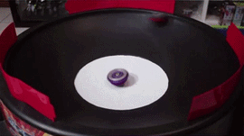
4de generatie (tot 4 punten)
- Beyblade dat het laatst blijft draaien (1 punt)
- Beyblade dat een ander uit de arena laat vallen (2 punt)
- Beyblade laten barsten (2 punten)
- Beyblade dat een ander in een speciaal hokje laten vallen (3 punten)
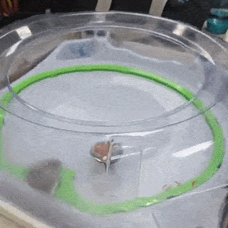
Type Beyblades
We zullen beginnen met de verschillende types. Er zijn er 4 in totaal Aanval, Uithoudingsvermogen, Verdediging en Balans.
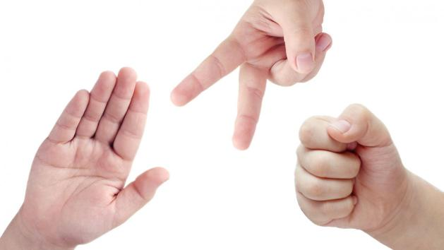
Het concept is dus vergelijkbaar met Schaar, Steen, Papier. Waar de ene een voordeel heeft aan de ander.
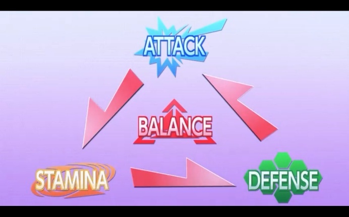
Beyblades zijn heel aanpasbaar, ze zijn in lagen verdeeld en je kunt ze aanpassen hoe je maar wilt.
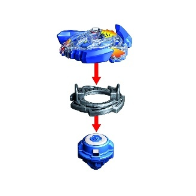
Beyblades kunnen met de klok mee draaien of tegen de klok in. (Rechts of links dus)
Rechts (Klok mee)

Links (Tegen de klok)

Aanval types
Aanval types focussen volop aanvallen zoals de naam het zegt, ze hebben allemaal asymmetrische vormen om scherpe hoeken te creëren. Door die scherpe hoeken kunnen ze heftige stoten geven. Ze hebben een voordeel aan Uithoudingsvermogen omdat ze niet goed zijn in het verdedigen, maar een nadeel aan Verdedigings Beyblades, omdat ze goed tegen aanvallen kunnen. Een van de belangrijkste kenmerken van een Aanval type is dat het zeer snel is, zo kunnen ze dus heel krachtig zijn.
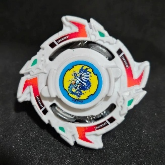
1ste generatie
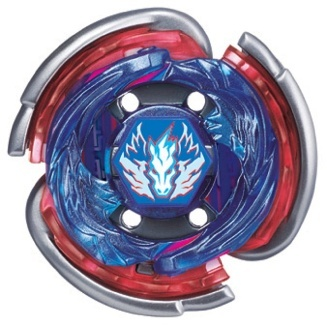
2de generatie
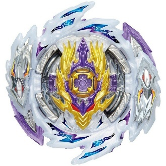
3de generatie
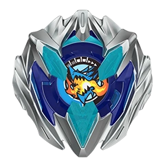
4de generatie
Uithoudingsvermogen types
Uithoudingsvermogen types focussen op conditie, ze blijven dus zo lang mogelijk draaien om zo een gevecht te winnen. Enkele kenmerken van een uithoudingsvermogen Beyblade zijn: Een ronde vorm, zo weinig mogelijk wrijving met de arena en symmetrie. Ze hebben een voordeel aan Verdedigings Beyblades omdat ze niet veel aanvallen, maar een nadeel aan Aanval Beyblades.
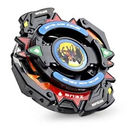
1ste generatie
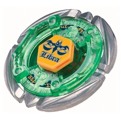
2de generatie
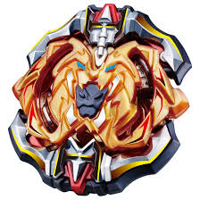
3de generatie
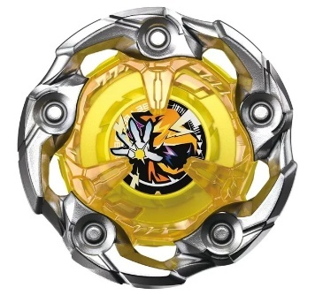
4de generatie
Verdedigings types
Verdedigings types focussen compleet op het verdedigen en reflecteren van grote stoten. De belangrijkste kenmerken zijn: Zwaar gewicht, stabiele posities, tegenaanvallen. Zwaar gewicht zorgt ervoor dat de Beyblade in het midden blijft zodat hij niet uit de arena valt. Ze hebben een voordeel aan Aanval types en een nadeel aan Uithoudingsvermogen types.
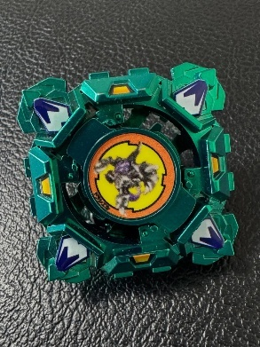
1ste generatie
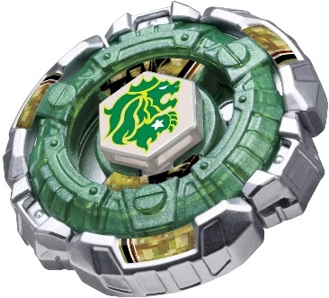
2de generatie
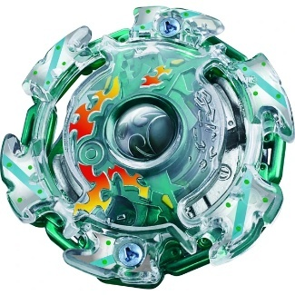
3de generatie
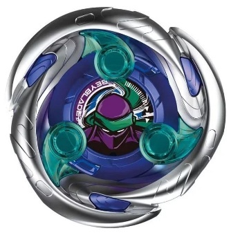
4de generatie
Balans types
Uiteindelijk hebben we de Balans types, er is geen definitief samenvatting van een Balans type, omdat de kenmerken kunnen afhangen. Balans types kunnen een combinatie zijn van 2 verschillende types of zelfs meer. Ze kunnen dus de kenmerken van verschillende types hebben, bijvoorbeeld: Ze kunnen conditie behouden en ook aanvallen wanneer nodig is.
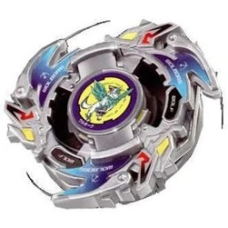
1ste generatie
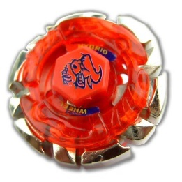
2de generatie
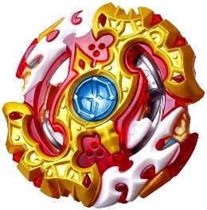
3de generatie
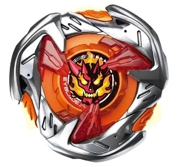
4de generatie
De Beyblade draaien doen we natuurlijk niet met onze handen.
Daarvoor hebben we een apparaat nodig, die apparaat heet dus de Bey Launcher. Maar afgekort is Launcher ook mogelijk. Er zijn verschillende soorten Launchers, met een draad en met een apart trekkoord. Ze hebben beiden hun voor- en nadelen.
De String Launcher
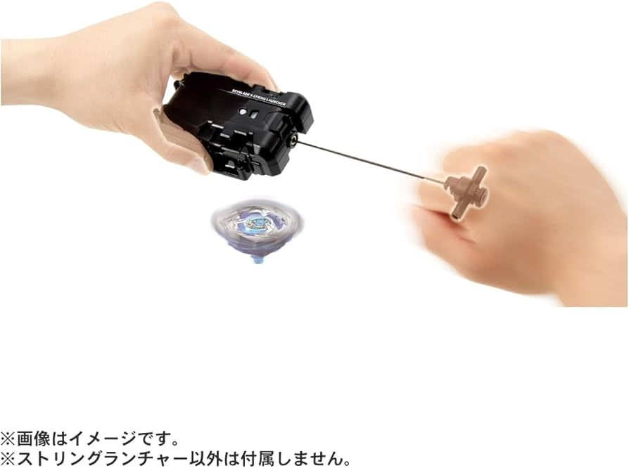
De String Launcher is een Launcher met een draad/koord dat je steeds aan kunt trekken. Het zorgt voor controle van de Beyblade door niet te veel, maar genoeg kracht te geven aan de Beyblade zodat het niet te snel draait en uit de arena valt.
De Ripcord Launcher
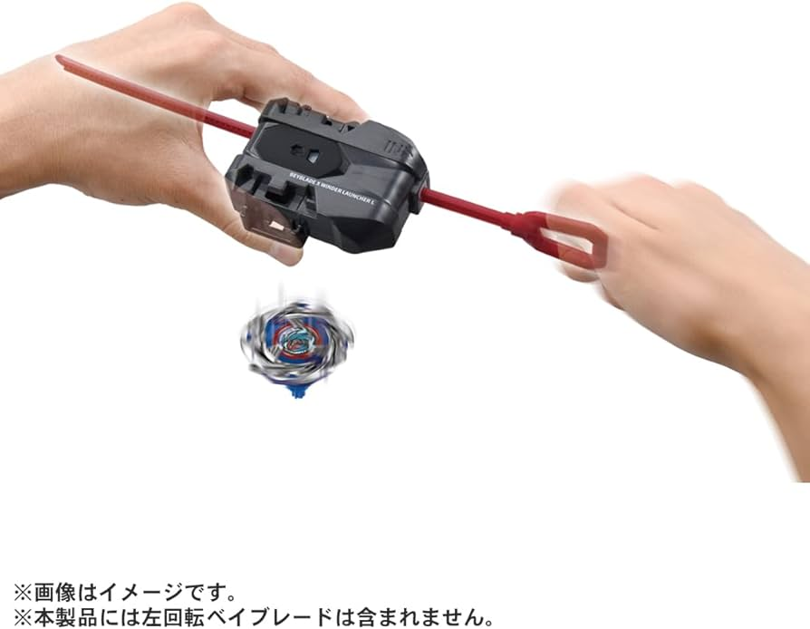
De Ripcord Launcher is een Launcher met een apart koord dat je weer moet insteken. Het heeft minder controle, maar geeft de Beyblade maximumkracht. Het enige nadeel is dat de Beyblade uit de arena kan vallen door te snel te draaien.
Beyblade Arena’s
Beyblade Arena’s blijven best wel consistent in alle generaties.
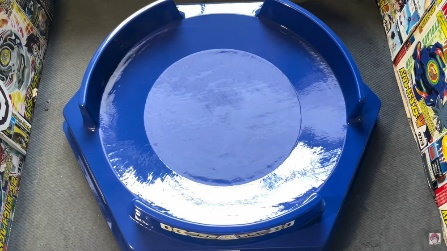
1ste generatie
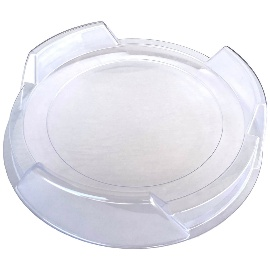
2de generatie
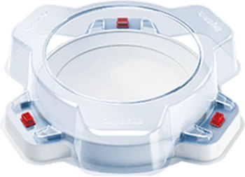
3de generatie
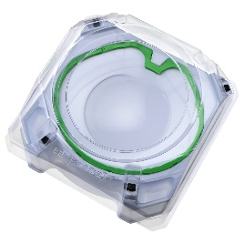
4de generatie
Nu weet je hoe de spelregels en types van Beyblade werken. Misschien kijk je er nu anders naar. Niet als speelgoed, maar als een echte hobby.
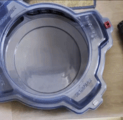